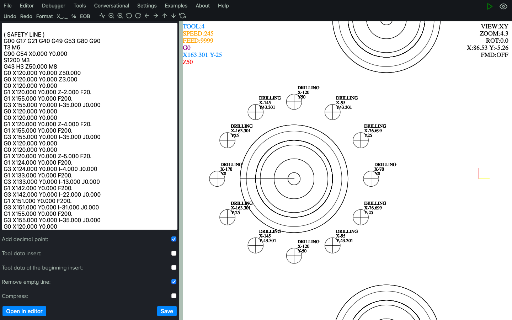

CNC Program export
Historically, CNC Macro Simulator was developed mainly to work with advanced CNC macros (CNC Parametric
Programming), therefore much attention was paid to exporting macros to pure ISO code.
This is of great importance, because
although
the programs created with the help of macros offer great flexibility and save time, a large number of CNC
machines do not support them or the operators do not know them.
For this reason, many useful functions have been added to get more control on the generated code like adding a
decimal point, adding comments about needed tools (at the beginning of the program) or just before calling a
given tool, code compression, using EOB (End Of Block) and so on.
